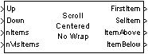
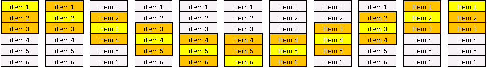
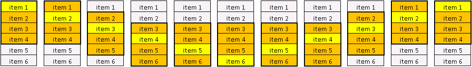

| MBDS Environment |
|
Scroll Centered No Wrap |
MATLAB Helpdesk |
General
Scroll within a list box and provide a centered selected/highlighted item. There is no roundtrip or wrap around at the beginning or end of the list.
Library
DescriptionMBDS Blockset

This block is used to scroll line by line within a list box. The main difference to block ScrollLineNoWrap is that the selected/highlighted item is located as centered line whenever possible.
A visualization of the scrolling behavior using this block is illustrated in the following two figures:

Figure 1: List box with nItems = 6 and nVisItems = 3 items
Remarks:
Figure 2: List box with nItems = 6 and nVisItems = 4 items
- Keep in mind that item i has index i -1.
- There is no roundtrip or wrap around at the beginning or end of the list box.
- No scrolling up for SelItem = 0.
- No scrolling down for SelItem = nItems -1.
- Scrolling up/down referes to the visual location and not to the item number.
- Scrolling up from SelItem = 4 leads to SelItem = 3.
- Scrolling down from SelItem = 4 leads to SelItem = 5.
- The first item is selected/highlighted initially.
Inputs and Outputs
Port I/O Data Type Description Up In boolean Signal to move up the selected item Down In boolean Singal to move down the selected item nItems In uint8 Total number of list box items nVisItems In uint8 Number of visible items FirstItem Out uint8 Index of the first visible item SelItem Out uint8 Index of the selected item ItemAbove Out boolean Indicates if further items exist above the selected item ItemBelow Out boolean Indicates if further items exist below the selected item
Example
Refer to th example.